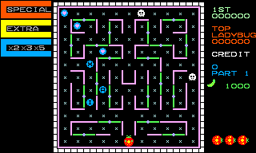

BUG-034 audio comparison
Keyboard input is the default. The opt-in joystick ROM is byte-identical to the original baseline. On 2026-09-07 the user tested the delivered keyboard ROM on hardware and confirmed the buzzing is gone. BUG-034 is Done.
Single emulator observations: 60 Hz modulation sideband power relative to a 500 Hz carrier is -23.7 dB with joystick polling and -155.8 dB with keyboard input, a reduction of 132.1 dB. Analysis sums the 438–442 Hz and 558–562 Hz bands and compares them with 498–502 Hz, using a one-second Hann window 0.5–1.5 seconds into each recording. Both explicitly muted fixtures produce exact digital zero. The keyboard sideband value represents numerical leakage, not a measured hardware noise floor. These recordings are emulator evidence; the separate user hardware listening result confirms the reported buzzing is gone.
Steady tone — diagnostic fixture
Slot 3 holds a 500 Hz tone at attenuation 4, exclusive priority 255, and initial wait 255. This prevents gameplay cues from replacing the test tone. The production audio service and selected input acquisition execute unchanged.
Joystick
Keyboard
Natural gameplay
Both runs enter through emulated 5 then 1, render and publish the first gameplay frame, and capture eight seconds with neutral input. No execution breakpoints remain during capture. Cues vary over time, so these recordings are listening evidence; the steady-tone fixture isolates polling modulation.
Joystick
Keyboard
Evidence and reproduction
Summary and hashes · Tone analysis · Quiet analysis · Keyboard/name input · Joystick control · Accelerated demo check · Rejected cue-preempted tone repeat.
Build each mode with LADYBUG_PROFILE=complete LADYBUG_INPUT=keyboard|joystick bash scripts/build.sh build and save its ROM, resident/module binaries, and maps in a separate artifact directory. The current audio and demo artifacts must come from the same source. Create an isolated PulseAudio sink named bug034_audio, then run python3 scripts/verify_bug034_input.py --mode keyboard --artifacts DIRECTORY, repeat for joystick, and use --demo-only for the accelerated natural demo check. Run python3 scripts/analyze_bug034_audio.py --directory DIRECTORY on the six recordings to reproduce the numerical comparison. The verifier reuses the project's existing private monitor client; no monitor features were added. Earlier GDB/XTest probes verified code identity but did not complete credit progression.
First published gameplay image:
